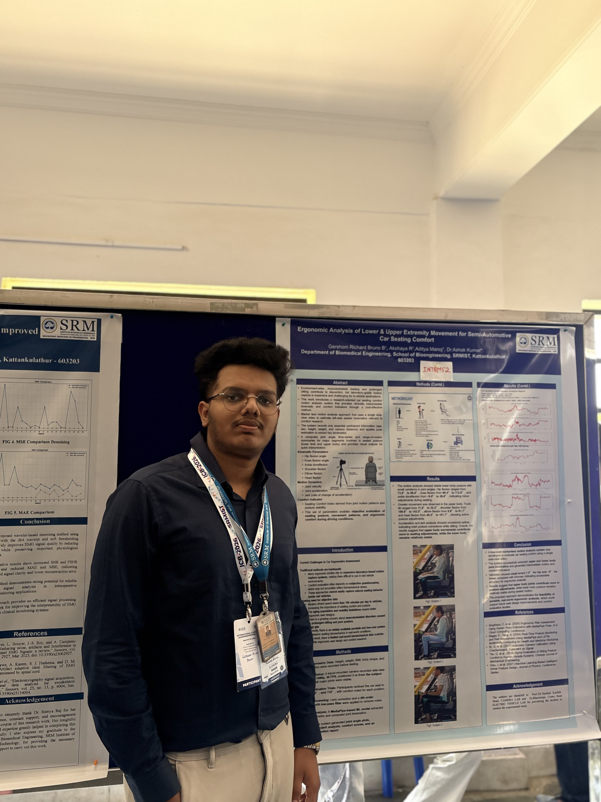

Biomedical Engineering undergraduate specialising in Machine Intelligence with strong expertise in embedded systems, firmware development, AI/ML healthcare systems, computer vision, biomedical signal processing, and intelligent medical hardware design. Experienced in developing wearable assistive technologies, LiDAR-based navigation systems, dual-IMU biomechanics analysis systems, AI-powered healthcare workflows, and real-time biomedical sensing platforms.
0 + Projects completed
Biomedical Engineering undergraduate specialising in Machine Intelligence with strong expertise in embedded systems, firmware development, AI/ML healthcare systems, computer vision, biomedical signal processing, and intelligent medical hardware design. Experienced in developing wearable assistive technologies, LiDAR-based navigation systems, dual-IMU biomechanics analysis systems, AI-powered healthcare workflows, and real-time biomedical sensing platforms.
Developed an end-to-end LSTM-based early sepsis prediction system using the PhysioNet ICU time-series dataset for real-time healthcare risk prediction and clinical decision support.
Developed a full end-to-end markerless biomechanics motion analysis platform for evaluating seated human ergonomics using a single RGB video input.
Grade: SEMESTER 7.
Grade: First class with distinction.
Worked on calibration, preventive maintenance, and IEC 60601 compliance management of diagnostic and therapeutic medical equipment across ICU and OT environments.
Visited multiple healthcare branches across Karnataka to analyse clinical workflow bottlenecks and propose operational improvement solutions.
Below are the projects on Python, OpenCv, AI & ML.
Developed a cloud chamber to visually detect and analyze ionizing radiation particles, enhancing understanding of particle physics and radiation properties.
Designed a functional prosthetic arm, focusing on replicating human movement to support those with limb differences
Developed an end-to-end AI-powered healthcare NLP platform for processing unstructured clinical text into actionable medical insights.
This project is a wearable smart cap designed to assist visually impaired individuals in navigating their surroundings safely and independently. The cap integrates 360° spatial awareness, detecting obstacles in real-time It features real-time obstacle detection using advanced spatial awareness technology, providing haptic feedback and voice-guided alerts for intuitive navigation
The system leverages embedded systems, sensor fusion, and AI-powered object recognition to deliver accurate and reliable assistance. Built with a focus on portability and user comfort, this project highlights my expertise in developing assistive technologies and creating innovative solutions to enhance accessibility and quality of life.Research presentations, biomechanics analysis and healthcare innovation work.
Presented research on upper and lower extremity ergonomics analysis for semi-automotive seating comfort at the ICB International Conference alongside delegates from the University of Bath.

Below are the details to reach out to me!
chennai, India